L’Afrique berceau d’humanité avec sa biodiversité exceptionnelle et ces côtes paradisiaque probablement
unique
au monde.
Elle offre à son monde une nature à l’état sauvage puissante et fascinante à contempler. Ces magnifiques
plages
et son
soleil ardent font d’elle, une terre d’accueil touristique bronzeur. C’est le lieu idéal pour une
distraction,
pour ces
vacances, pour découvrir les mystères de l’autre bout du monde.
Envie de profiter des merveilles que nous réserve la beauté des côtes africaines ?
Découvrons ensemble les plus belles plages de quelques pays comme : la République dominicaine,
l’Afrique
du
sud,
le
Sénégal, le Maroc, l’Egypte et le Madagascar.
Allons en République dominicaine
Les plages sont assez nombreuses et idylliques, nous avons fait une sélection des plus belles plages
de
l' île.
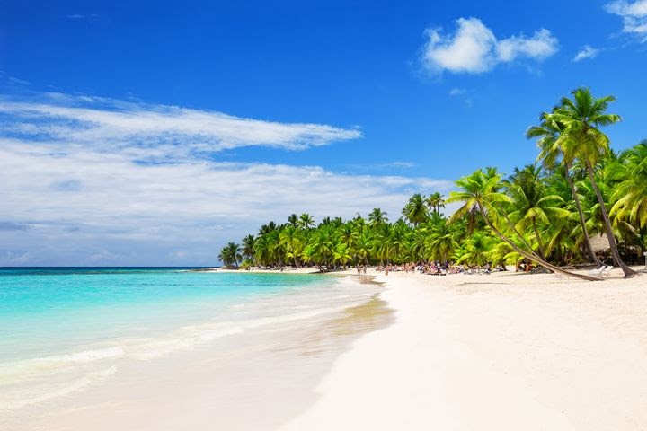
Punta Cana
Une merveille de la région, rêvée par de nombreux touristes. Elle presente une eau de couleur
royale
turquoise, son
sable blanc et ses cocotiers font d’elle la plus belle des plages.On y retrouve tout au long de
cette
plage des hotels
et de nombreuses bars et restaurants.
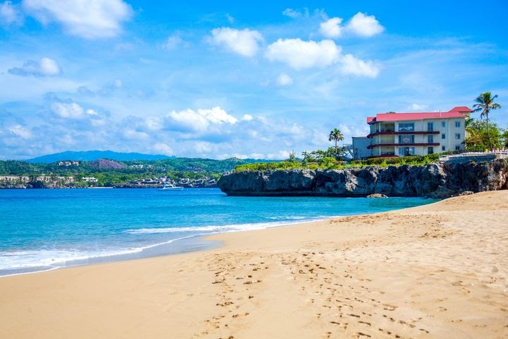
Sosùa (Puerto Plata)
Situé à environ 25 km de Puerto Plata et à quelques kilomètres de Cabarete, c’est un emplacement
privilégié de la zone
avec sa plage nichée dans une baie en forme de U. C’est le lieu où vous pouvez découvrir des
trésors
marins ainsi que
les récifs coralliens, sans oublier de nombreux petits restaurants avec des mets locaux. Nous
avons
aussi la possibilité
de réserver des parasols et des transats.
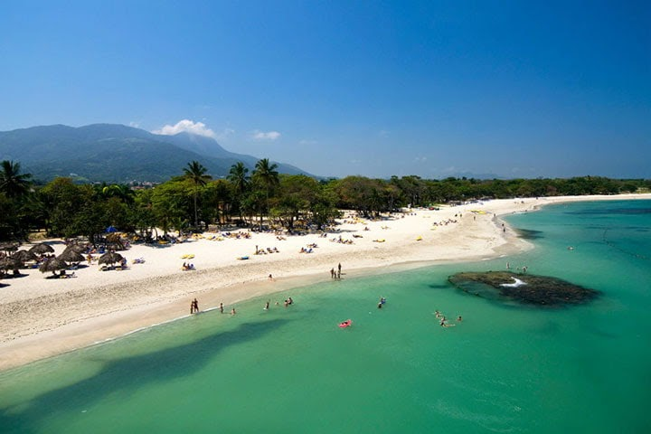
Playa Dorada (Puerto Plata)
Playa Dorada est non loin de la plage Sosua, elle est aussi belle et on y trouve sur place de
nombreuses infrastructures
; des restaurants, des hôtels,... ainsi que des terrains de golf avec une vue agréable.
Bon à savoir sur les belles plages d’Afrique du Sud
L’Afrique du Sud est un pays situé au fin de l’Afrique entouré de plusieurs centaines de kilomètres
de
côtes. Au sud et
à est, bordé par l'océan indien, il offre des baignades chaudes quasiment toutes l’année. Le long du
Cape town et la
côte atlantique regorgent de paysages paradisiaques.
Clifton Bay
C’est ici qu’on retrouve les merveilles du monde, elle est huppé, situé non loin du cap et
entouré de
blocs de granit
qui séparent les grèves.
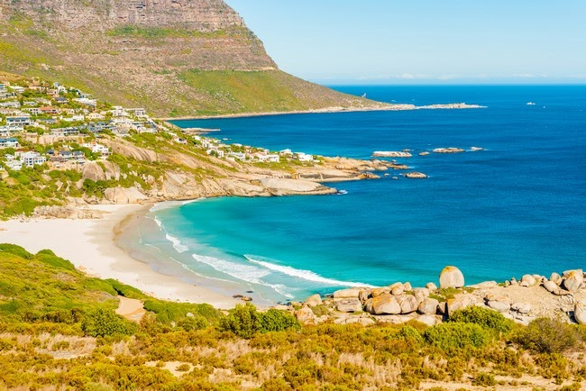
Fish hoek Beach
La toute première plage du Cap à avoir posé un système de filets à requins. Ce système est placé
le
matin et retiré en
fin d'après-midi afin de ne pas perturber la faune aquatique.
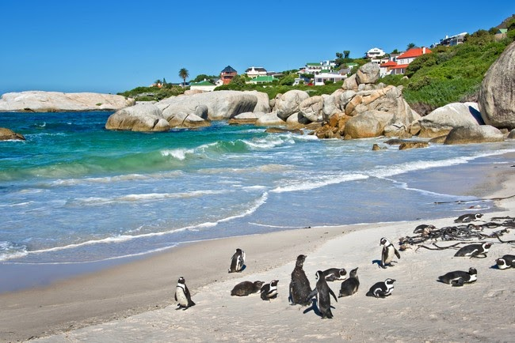
Boulders Beach
Boulders Beach est située à Simon’s Town dans la banlieue du Cap, elle accueille la visite
fréquente
des colonies de
manchots ce qui fait d’elle une plage beaucoup plus admirable. De plus, elle fait partie du parc
de
Table Mountain dont
nous allons pas manquer sa biodiversité et sa vue imprenable sur la ligne d'horizon.
Important les belles plages du Sénégal
Le Sénégal est un pays situé entre 12°8 et 16°09 de latitude nord, 12 et 17 de longitude ouest. Sa
point
ouest est la
plus occidentale de toute l’Afrique Continentale dont les centaines de kilomètres de plages, de
superbes
vagues et des
activités nautiques.
Cap Skirring
Une merveille, située sur la côte de la Casamance au sud-ouest du Sénégal. Elle se classe parmi
les
plus belles plages
du pays, considérée comme l’un des hauts lieux balnéaires pour la baignade. Elle s’étend sur une
longueur de 5
kilomètres, idéale pour se détendre dans les eaux claires, pour partir à la découverte des
villages
côtiers à bord d’une
pirogue ou encore le marché de Ziguinchor.
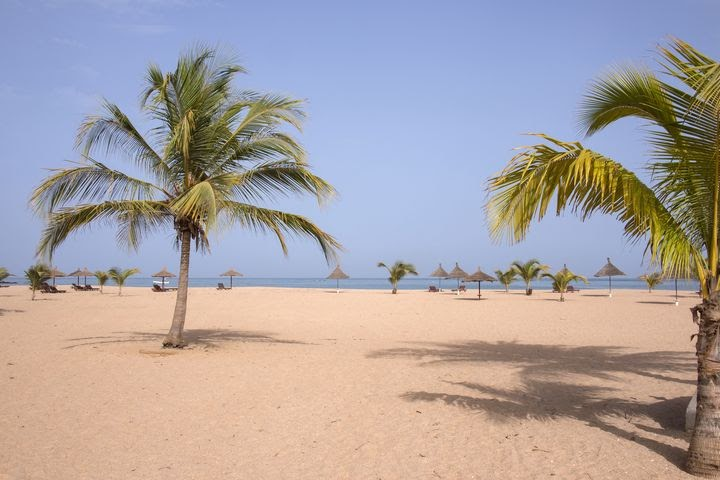
Saly
Une ville balnéaire située à 80 kilomètres au sud-est de la capitale de Dakar. Elle abrite l’une
des
plages les plus
connues du Sénégal avec ses atouts naturels comme les palmiers ainsi que les restaurants, bars
et
villas. C’est
l’emplacement parfait à la baignade et aux jeux nautiques. Cette ville est également réputée
pour la
pêche, son ambiance
nocturne et son golf.
Voyons ceux du Maroc
On dénombre plus de 145 plages dont 93 ont été contrôlées par les départements de l’Equipement et de
l’Environnement,
contre 18 seulement lorsque la veille a été mise en place, en 1993. 90% d’elles sont déclarées
conformes
aux exigences
réglementaires pour la baignade.
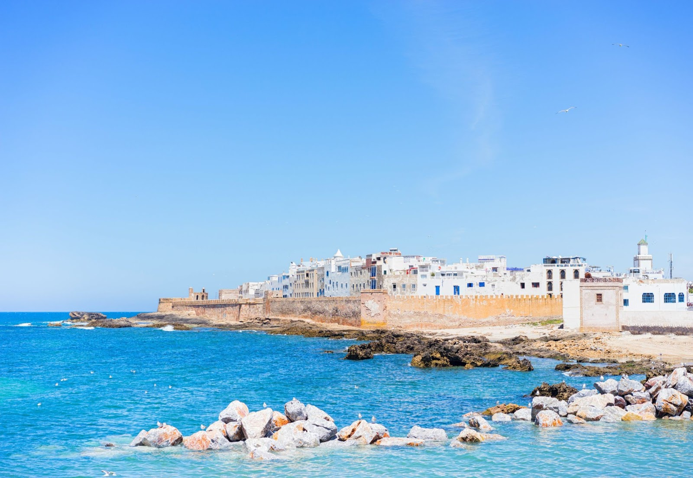
Essaouira
Signifie “La bien dessinée” en berbère, située sur le côté ouest de l’Atlantique. C’est une des
villes les plus
importantes et charmantes du pays. Elle abrite les grands ports de pêche du Maroc. C’est le lieu
où
se déroule chaque
année le Gnaoua World Music Festival. Cette ville est un véritable paradis des sports de plage,
elle
est beaucoup plus
sollicitée par les touristes en vacances à Marrakech et Agadir.
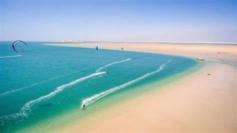
La plage de l'île du dragon à dakhla
Un dragon sort sa tête de l’eau turquoise, telle est la forme du l'île déserte d’humanité depuis
l'arrivée les
espagnols. Elle présente un décor de carte postale entre le Sahara et l'océan Atlantique avec
une
eau cristalline,
convoitée par de nombreux touristes dans le sud Marocain.
Allons visiter ceux d’Egypte
Tout comme dans les autres pays, il existe de nombreuses plages en Egypte. Des espaces coquettes,
agréables à contempler
pour les activités sportives.
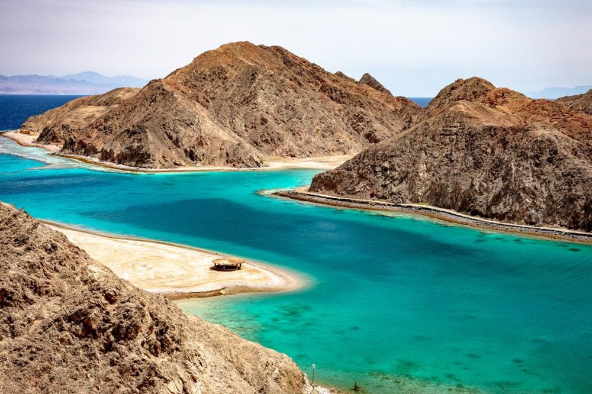
Taba
Taba située sur le golf d’Aqaba ayant pour extrémité la frontière israélienne. Taba a été la
dernière
ville rendue en
1989. Cette petite ville reste l’abri du tourisme de masse et de luxe idéal pour tous ceux qui
recherchent la
tranquillité pour leur loisirs.
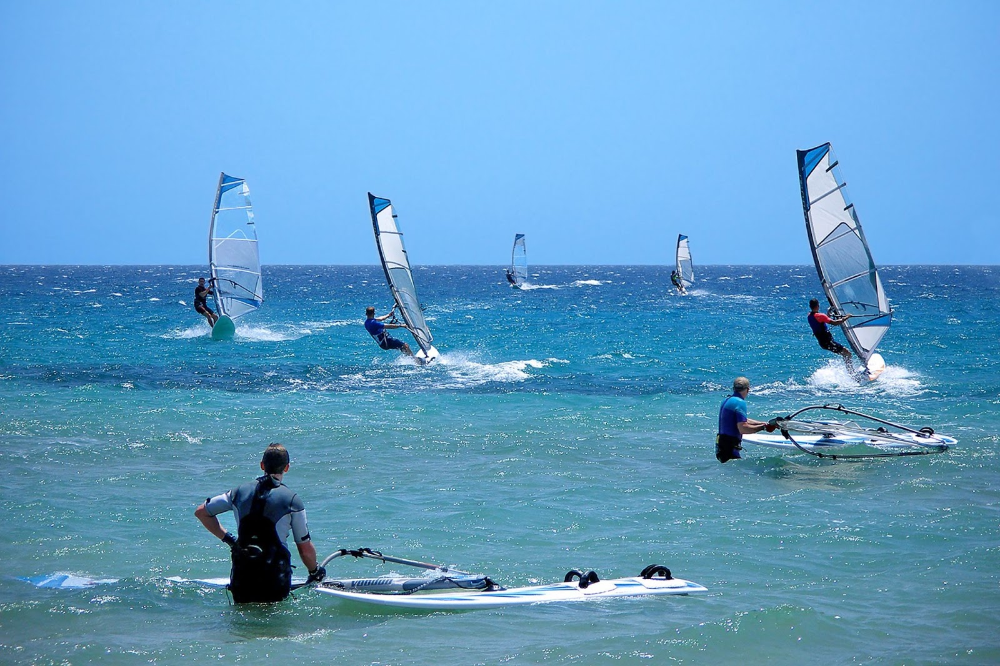
Safaga
L’une des plages les plus célèbres pour un séjour en famille. Cette station vous présente de
multitude activités très
intéressantes du point de vue historique. Possibilité de visiter des épaves légendaires, c’est
aussi
un point idéal pour
découvrir la population égyptienne et vers la terre sainte de la Mecque.
L’adorable : Madagascar
Pays malgache, situé dans l’Océan Indien et géographiquement rattaché au continent Africain. C’est la
quatrième plus
grande île du monde, qui regorge de multitude plages. C’est la destination de rêve recherchée par
les
amateurs de plein
air.
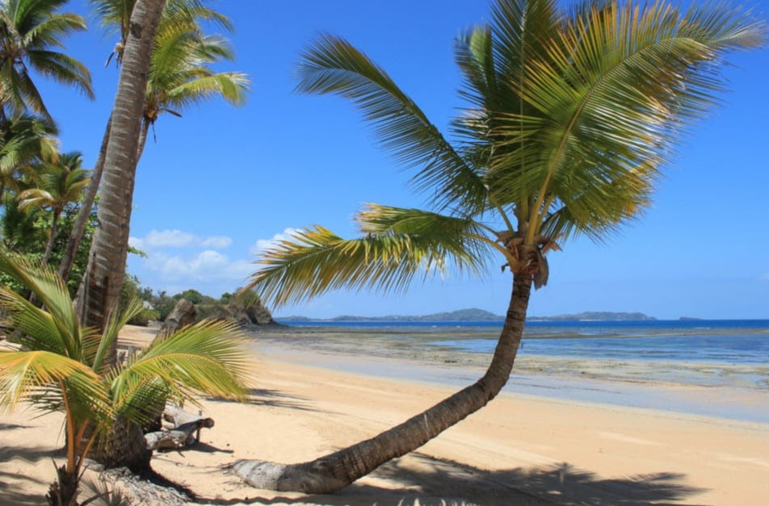
Nosy Be
Nosy Be, c’est une île située au nord-ouest de Madagascar. Selon l'histoire, elle a été habitée
par
les arabes. Nosy Be
est l’une des plus belles plages par son eau calme, agréable et d’une couleur turquoise. C’est
le
lieu idéal pour les
touristes à la recherche d’un endroit calme, magnifique pour se détendre. C’est aussi le lieu
propice pour pratiquer les
jeux de peche sport, des croisières en boutre, le surf etc.
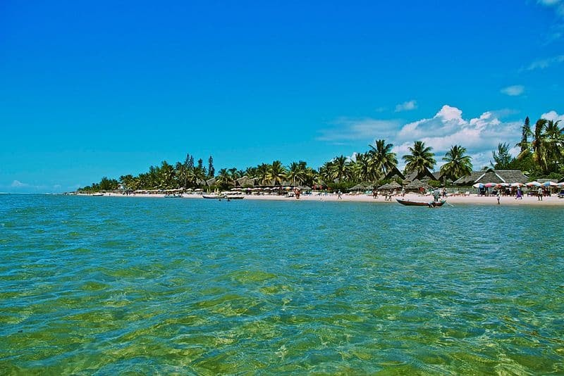
Foulpointe
Situé à l’est ou d’Amborovy à l’ouest, c’est une plage populaire car elle est non loin de la
capitale, précisément dans
la province de Toamasina. Son espace festif fait elle un endroit convoité par de nombreux
visiteurs.
Elle offre à son
public des activités comme : croisière, canoë, surf et bien d’autres.